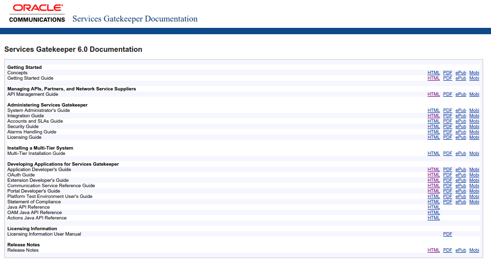

OCSG 6.0v1 generally available: new features introduction
23 January 2015
The new OCSG version is available and there are a lot of new interesting things, starting with a Documentation reorganization.

This is the press note (source Oracle Community):
Oracle Communications is pleased to announce that as of Thursday, 22 January 2015, we ntroduced the most comprehensive API exposure platform in the industry with the release of Oracle Communications Services Gatekeeper 6.0 (OCSG 6.0).
OCSG 6.0 introduces expansive API Management capabilities to manage the entire API lifecycle enabling enterprises and CSPs to accelerate internal development, engage with partners and monetize assets. OCSG 6.0 delivers this alongside industry leading SLA management, analytics and an extensive array of built-in communications services.
As part of the OCSG 6.0 release, a new OCSG-based solution, called "Network Policy as a Service" (NPaaS), was launched by integrating the Oracle Communications Policy Management (OCPM) PCRF to provide out-of-the-box exposure of network policy for both telephony and cable networks. This allows CSPs and partners to align the data bandwidth with the digital service being delivered, ensuring a higher rate of customer satisfaction. OCSG 6.0's API Management, simplified configuration and lightweight deployment features enable new API exposure use cases for enterprise IT integration, including: Contact center application enablement API exposure for Communications Enabled Business Processes (CEBP) and Unified Communications (UC)
KEY FEATURES OF THE OCSG 6.0 RELEASE API Management made powerful and simple Web Service API generation in the Portal allows APIs to be built in minutes API catalog and versioning Onboard and manage partners API Monitoring, analytics, metering and charging Management and partner portals Simplified configuration and deployment with installation in 15 minutes Lightweight single tier deployment option Integration with the Oracle Communications Policy Management (OCPM) PCRF to safely and securely expose network policy through the Parlay X and Restful QoS APIs Enhanced Oauth integration simplifies integration with SSO and IDM Enterprise Manager Cloud Control integration facilitates cloud-based deployments Advanced API firewall provides protection against a multitude of security threats * Integration with OCCAS Service Controller provides a broad array of SS7 interface options
Product releases are available for download from the Oracle Software Delivery Cloud.
More documentation can be found via Services Gatekeeper 6.0 Documentation
It's soon yet to write a detailed analysis but I would like to highlight some takeaways. This is not the typical release.. in fact, there isn't an official announcement as we've seen previously. There are a lot of small improvements to help operators and system integrators to work with OCSG which it's great. Some of them:
- New Default Single-system Installation Option and Getting Started Guide: everything in a single package (database included), it's going to save us a lot of time and PoCs will be easier. Great point.
- Documentation Improvements: I've to check them yet but the new structure looks better and, for sure, some sections in the 5.1 documentation could be improved/corrected.
- PCRF Integration Example: This is something I really appreciate because I was working on that and it's really hard because of the lack of information and references to the Tekelec product. I will do it very soon but after a first look, it lacks a bit more of detail in the Tekelec PCRF setup.
- Extending the Portal User Interfaces and Portal Developer's Guide: I know there are a lot of improvements in this part. An easier installation and customization, for sure, one of the points everybody asked with the previous version.
- New API Management Features: OCSG competes some times (but not always) with more general products as API gateways. Improvements in this part are warmly welcomed.
I miss some things as more Geographic redundancy improvements and more debugging options but it's soon yet to know if they're or not in this release. Anyway, there are more interesting improvements, consult the Release Note for detailed information.
I will try to write some specific articles showing the new features. Just subscribe to the blog to keep yourself informed.